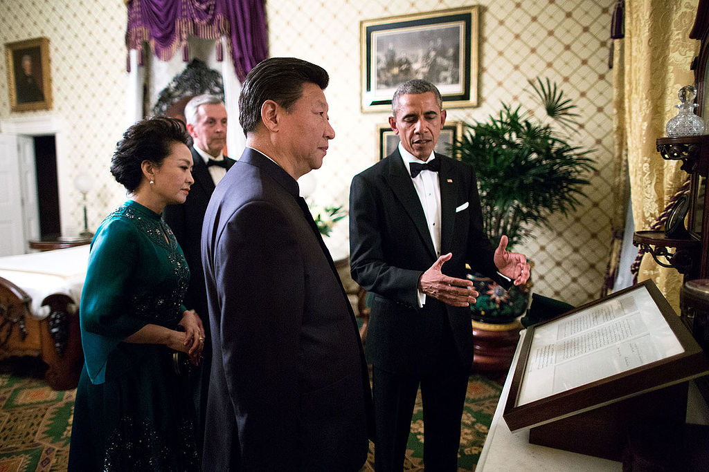

Technology Risks
The page or area describing the risks posed by your chosen technology/topic.
The act of cyber warfare has risks not only with those that follow normal cybercrimes but the increased risk of potential war. With rising tensions between the US, Russia and China, there has been a great surge in state-sponsored attacks. In James A. Lewis's paper, Assessing the Risks of Cyber Terrorism p. 10, Cyber War and Other Cyber Threats, he talks about how it is easier to recover from the damage done by a cyber-attack than a physical attack. While cyber-attacks are becoming advanced and invasive, most major nations are continuously preparing to counter the cyberattacks.
As mentioned before, the US has indicted individuals on these attacks as a means of deterrence. However, this could be a greater risk for the states. Governments are not affected by calling out an individual working for a nation rather than the nation itself. They will likely continue said attacks as they have not been attributed with it. With nation-states continuing to probe into other nations, there also poses the risk that private citizen data will be breached. If countries have not been held accountable for a handful of cases, what stops them from committing even more cases? It is the lack of action that will send a message that nations will accept higher levels of hacking into their private and government sectors (Dilanian,2016)
Even if, in the end, an attack is traced back to a government, blaming another country for the said attack is extremely difficult with large amounts of evidence needed and the slightest mistake could lead to international conflict. This means that even though the attacked nation-states may try to trace the hack back, they may not be able concretely to show that it was caused by a nation-state, somewhat a single individual who "may" have connections to said state. (Carr,2011 p.200)This allows governments to continue to create new groups or hire new individuals to carry out attacks without deterrence.
Assessing these attacks could also incriminate the victim nation. By revealing what information they have, the attacking nation-state could get information on the victim's techniques, which they could potentially use to attack again later on in a more sophisticated way. If this were the case, it would become more difficult for the victim to be able to catch said attacks, and they would no longer be able to protect. In saying this, both the attacking and victim state might lose visibility into their seized networks and harm future operations. (Egloff & Smeets,2021) In this case, it's easy to see it would be easier for nations to keep quiet and not say anything.
When deciding on how to react to a cyber-attack, governments must be careful to avoid the risk of an all-out war. If this were to happen, it would create open hostility between both sides, meaning that both cyber-attacks and physical attacks are more likely to happen alongside each other. While in most cases it will be easier to recover from a cyber-attack, a cyber/physical attack combination has the potential of causing major problems as systems taken down may not be able to be repaired for months on end. (Tsagourias,2012)
State-sponsored cyberattacks are likely to remain to stick to the edge of the line of what counts as warfare vs criminal attacks. Staying close to this line, attacking nation-states have the potential of causing a lot of damage to the victim's states infrastructure. The most relevant example would be the Darkside Pipeline incident. A major gas pipeline in the states was shut down briefly due to a ransomware attack but quickly came back online. However, the media new coverage of the attack causes chaos and panic among many citizens in the united states. This created a rise in gas prices as many believed that there would be a gas shortage. This small attack carried out by what is believed to be a Russian-state-backed hacking group shows that the damage done can spin things out of control. While DarkSide claims to be apolitical, it is unlikely that Russia will help the US in convicting them of their crimes. In the end, the Colonial Gas line company paid over 4.4 million dollars and will likely suffer even more losses. The effect this group has had on the United States show exactly the risks and what many people fear will happen after a cyberattack. (Carmack,2021)

The White House. (2019). Barack Obama and Xi Jinping tour the White House on Sept. 25, 2015
lawfareblog. https://www.lawfareblog.com/whats-point-charging-foreign-state-linked-hackers.
by Tony Clear.
thanks to W3C for tutorial and adapted code from Style Examples
also thanks to WDN for HTML and CSS resources and any adapted code snippets from Mozilla Developer Network